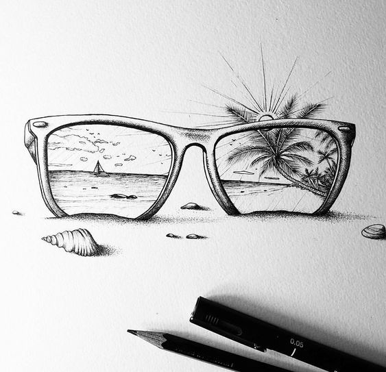

الادوات
اقلام الرصاص :هناك ماركات متعددة جيدة ولكن أفضل الشركات المصنعة لأقلام الرصاص المستخدمة في الرسم هي شركة "فابر كاستل "
وتكون درجاتها كالتالي..
9H...4H 3H 2H H F HB B 1B 2B 3B 4B 5B 6B … 9B E EE
اغمق افتح
وتكون الدرجات ..HB,H بدرجاتها لرسم الخطوط والخطوط الرئيسية.
أما B 2B فتبدأ بوضع الظلال الخفيفة .
و4B-9B لأماكن الظل الغامق وتدكين الظلال النهائية..
وتأتي الدرجات في علبة حسب نوع الشركة …
التدرجات الأفضل من 2H-8H
كراسة الرسم : تستعمل غالبا نوعين من الورق (الكانسون - الفبريان)ويكون نوع هذه الأوراق خشن ليساعد في عملية التظليل..
أفضل الشركات المنتجة للورق خاصة الرسامين هي شركة " كانسون"
الممحاة وأنواعها تكون من نفس ماركة الأقلام
المساحة العادية-مساحة العجين المرنة او تسمى مساحة الفحم-مساحة ذات رأس رفيع او يمكن استخدام المشرط لتشذيب المساحة العادية
سبراي مثبت(ٍSpray) بعد الإنتهاء من اللوحة مع مرور الزمن يخف التظليل في اللوحة فيجب استخدامه كمثبت
ملاحظة: يجب الإنتباه لبعض أنواع المثبتات مكتوب عليها ورنيش وهو يستخدم للوحات الزيت وليس لرسومات القلم الرصاص وغيره
فيديو تعليمي